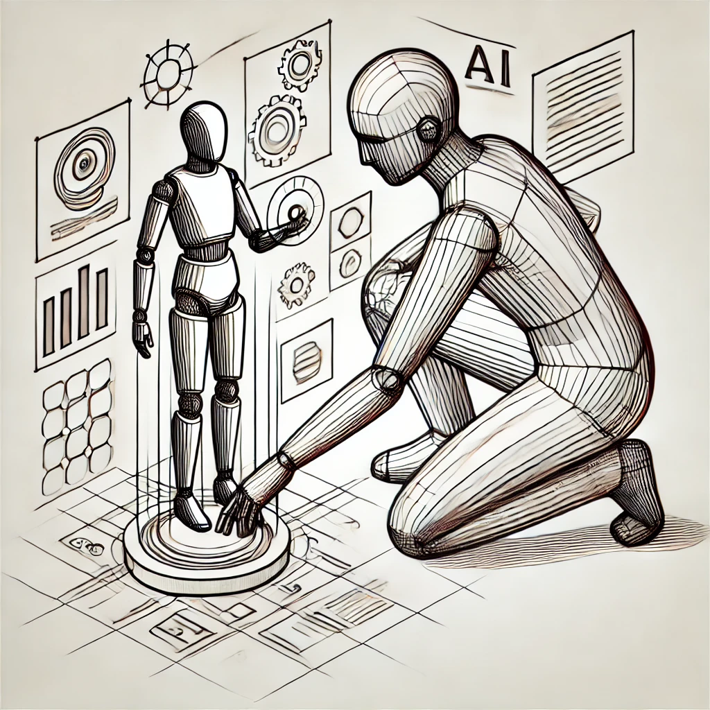
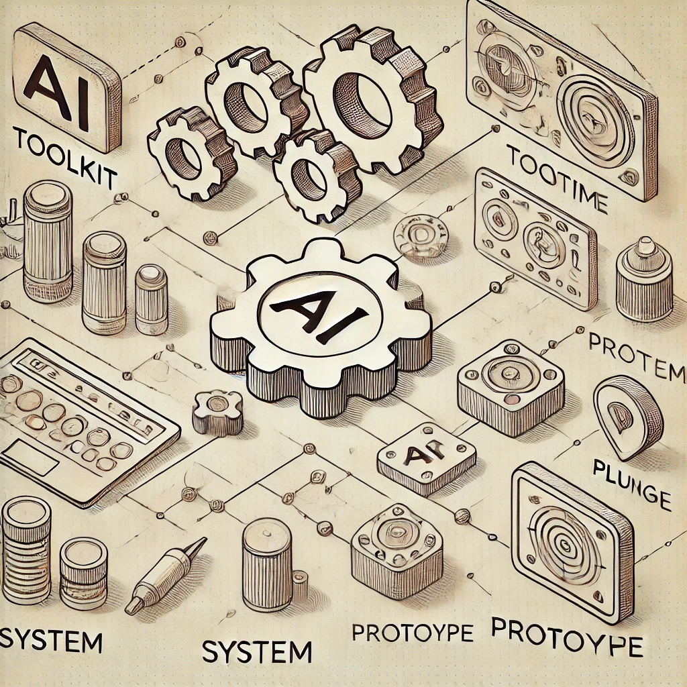
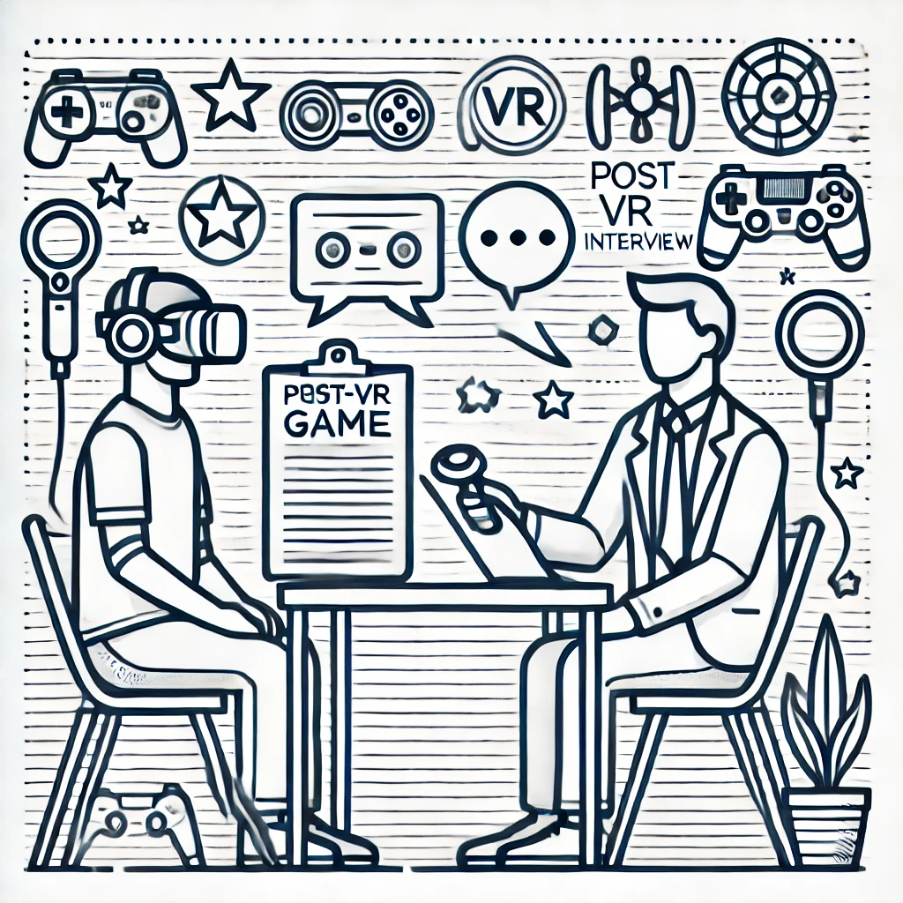
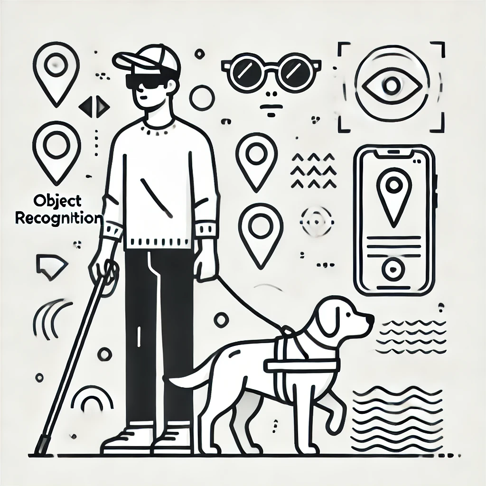
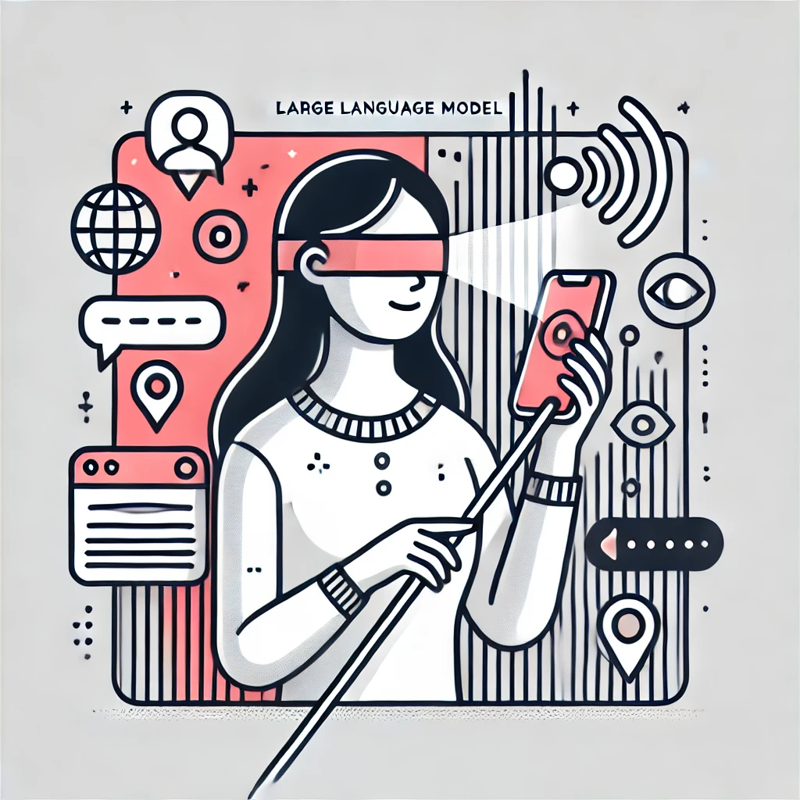
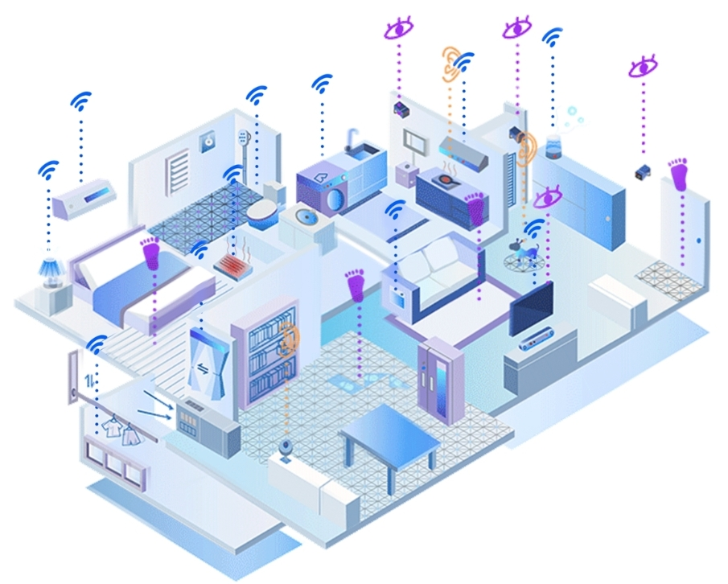

Portfolio
Human-AI Collaboration

LLMs Support Human Work

AI Toolkit, Prototype & Plugin
LLMs x Education
Project Titles
Project Description
Related Links：
Behavioral Analysis and Affective Computing
Dataset and Modeling

Understanding People in VR Environment by using Qualitative Methods

Understanding People in VR Environment by using Quantitative Methods
Social Computing
GenAI Content on YouTube
Socio-Technical Support
User Engagement & Digital Government
Accessibility / Disability
Remote Sighted Assistance (RSA) and People with Visual Impairments (PVIs)

Technologies Support People with Visual Impairments (PVIs): Prototype Development

Ongoing Work
Smart Home IoT
